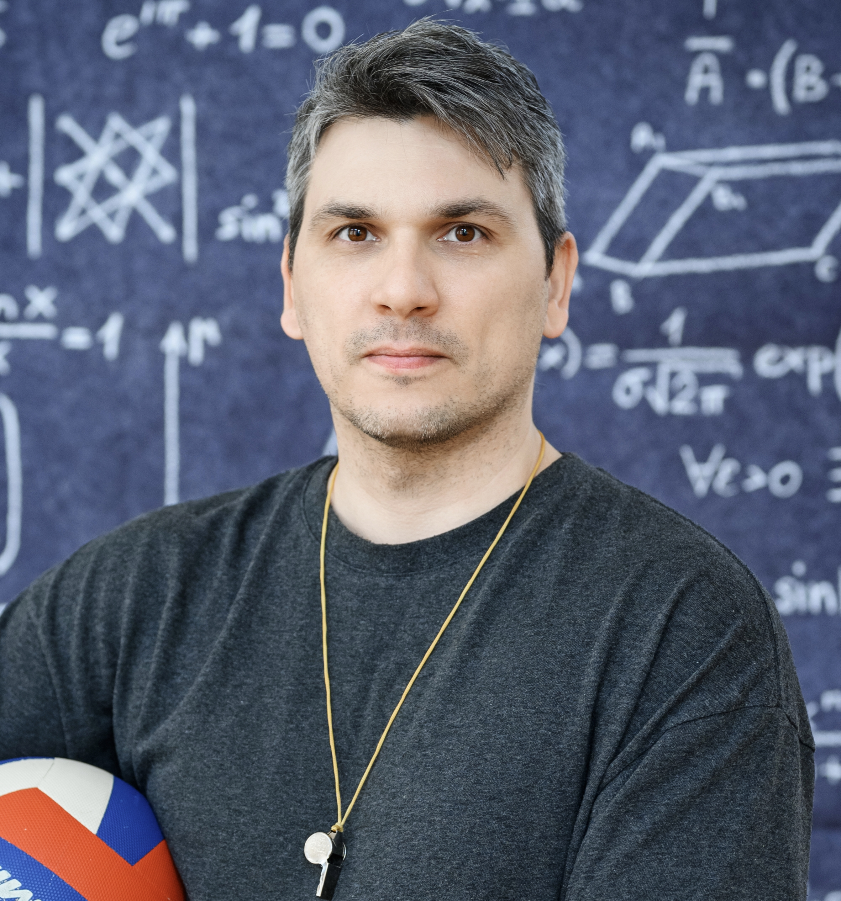

Образование
Высшее педагогическое образование, профильные документы и подтверждающие дипломы.
Перейти →Профессиональное портфолио
Учитель физической культуры, наставник, организатор спортивных мероприятий и сторонник активного, здорового образа жизни.

Обо мне
Здесь вы можете написать о педагогическом опыте, месте работы, принципах преподавания, спортивной подготовке и личной миссии как учителя.
Педагогическое кредо
В этом блоке можно разместить ваш личный подход к преподаванию физической культуры, отношение к командной работе, развитию учеников и формированию здоровых привычек.
Опыт
Первый опыт преподавания и работы с детскими спортивными коллективами.
Освоение современных методик преподавания и организации школьных соревнований.
Подготовка команд и индивидуальных участников к соревнованиям разного уровня.
Быстрый обзор
Организация школьных стартов, турниров и спортивных праздников.
Формирование командного духа, дисциплины и мотивации к занятиям спортом.
Привитие привычки к активности, выносливости и укреплению здоровья.
Активная жизненная позиция, увлечённость спортом и позитивный настрой.